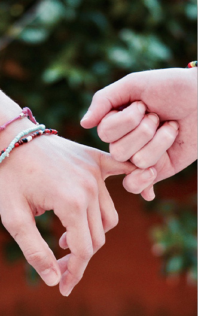
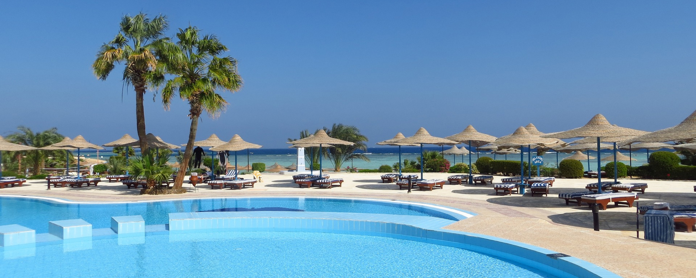
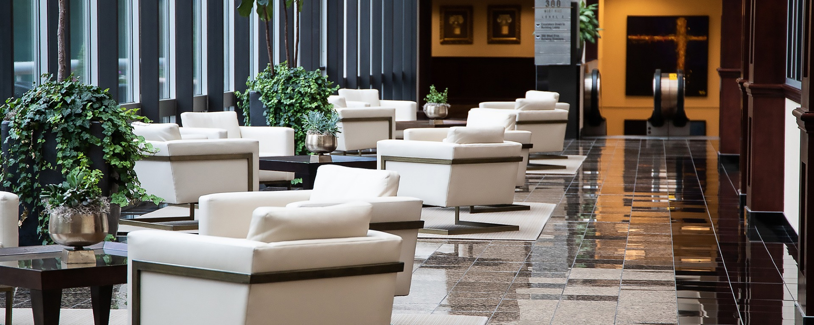
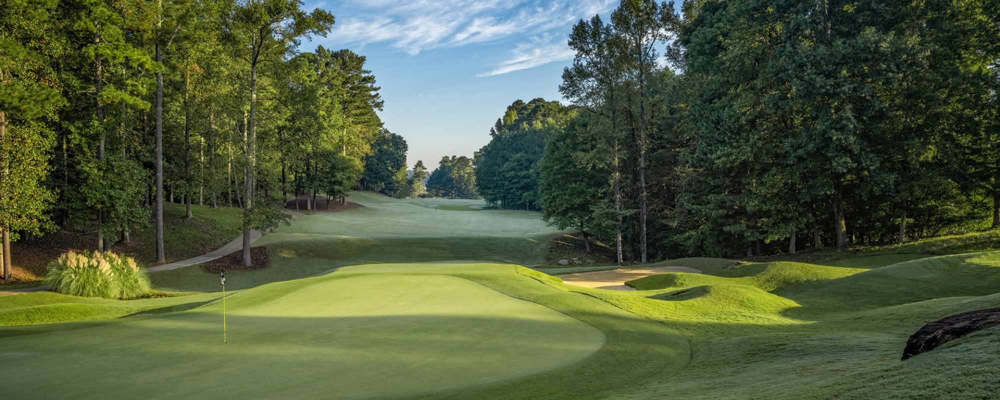
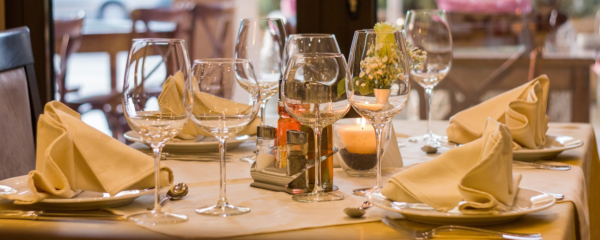

본문콘텐츠영역
VISION
지속가능한 내일을 위한 한화의 담대한 도전은 멈추지 않습니다.
-
- 도전
- directions_run 기존의 틀에 안주하지 않고 변화와 혁신을 통해 최고를 추구 하며 멈추지않는 도전과 혁신으로 미래를 연결한다.
-
- 정도
- fork_right 한화의 성장바탕인 ‘신용과 의리’를 배경으로 자긍심을 바탕으로 원칙에 따라 바르고 공정하게 행동한다.
-

- 헌신
- volunteer_activism 회사, 고객,동료와의 인연을 소중히 여기며 보다 큰 목표를 위해 혼신의 힘을 다하여 비전 달성을 위해 노력한다.
사업분야
한화 호텔&리조트는 국내 최고의 리조트 대표 브랜드입니다.
종합 레저 서비스 브랜드로 도약하겠습니다.
-
- 리조트
- 
- 12개 직영 리조트와 4,800실 이상의 객실을 갖춘 국내 최대 규모의 콘도미니엄 체인을 보유하고 있으며, 리모델링을 통해 객실과 부대시설을 높은 수준으로 강화해 보다 안락한 휴식 공간과 서비스를 제공하고 있습니다.
- view more+
- 호텔
- 
- 한화호텔은 국내 최고 프리미엄 종합 레저/서비스 사업을 제공해 드리고 있습니다. 유니크 & 스타일리시한 인테리어와 개인 맞춤 서비스를 통해 고객에게 완벽한 하루를 선사합니다.
- view more+
- 골프
- 
- 국내 최다 골프클럽을 보유하고 있는 한화호텔&리조트 골프 클럽은 각각의 특성을 보유한 완벽한 코스, 천혜의 자연환경, 최고의 시설과 서비스를 보유하고 있습니다.
- view more+
- F&B
- 
- 서울의 대표적인 랜드마크인 63빌딩의 파인다이닝 레스토랑과 더 플라자 호텔 중식당 '도원' 그리고 '도원스타일', '티원'을 운영하고 있습니다. 소중한 분들의 기억 속에 오랫동안 남을 추억을 만들어 드립니다.
- view more+
사회공헌
‘사업보국’의 창업이념, ‘신용과 의리’의 한화정신을 바탕으로
기업시민으로서의 사회적 책임을 다하고자 합니다.
지속가능경영
우리 사회와 지구가 앞으로도 지속가능한 발전을 이어갈 수 있도록,
오늘 할 수 있는 일들을 끊임없이 고민하고 실천합니다.
-
- Environment
- 한화는 변화하는 글로벌 에너지 패러다임에 적극 대응하고 지속가능한 사회에 기여하고자 합니다.
-
- Social
- 중소 협력업체의 자립 환경을 조성하고 경영에 실질적으로 도움이 될 수 있는 실천적 방안을 마련하고 있습니다. 지역사회의 성장과 자립 기반 확립에 한화가 함께합니다.
-
- Governance
- 신의에 바탕을 둔 정도경영, 한화의 신념입니다. 윤리적이고 책임 있는 경영의 기준을 제시하겠습니다.
인재채용
지속가능한 내일을만들어가는 당신이 바로 한화인입니다.
1952년 한국화약 주식회사의 창립으로 시작된 한화그룹은 60여 년 긴 시간 동안 끊임없는 변화와혁신을 추구해왔으며, 지속 가능한 내일을 만드는 한화인들이살아 숨 쉬는 역사를 만들어 가고 있는 기업입니다.
JOIN US?